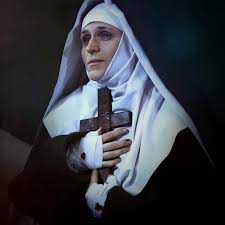
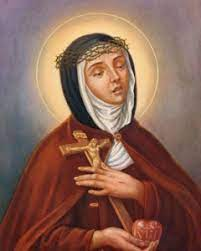
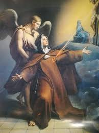
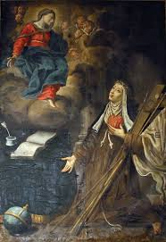

“ABADESSA DO MOSTEIRO”
PREPARADA PARA OS DIVERSOS
OFÍCIOS 
Em plena atividade na Comunidade Religiosa, a Irmã Verônica ocupou diversos cargos: começou como Cozinheira, encarregada da Despensa, cuidando da Padaria, Enfermeira, tratadora das Roseiras, cuidando do Refeitório, Sacristã e Mestre de Noviças. Importante evidenciar que exerceu as diversas funções de um modo sempre igual, portando-se em cada trabalho, como serva de todas as Irmãs da Comunidade, sempre revelando o seu bom exemplo.
VISÕES MISTERIOSAS
Querendo NOSSO SENHOR conduzir a Irmã Verônica a uma Santidade maior e mais sublime, mostrou-lhe em visão um “Cálice Misterioso”, que logo ela percebeu ser um presságio da “Paixão Divina” que ela deveria copiar. Ela compreendeu que para ser esposa de JESUS teria que abraçar o “Cálice com sangue” (aqueles vigorosos sacrifícios penitenciais) que continha o SEU Divino Sangue. Enquanto pensava, a Humanidade Santíssima de NOSSO SENHOR lhe apareceu coberto de chagas que derramavam o seu precioso e sagrado sangue, do mesmo modo como ELE foi flagelado na coluna, e contendo em Sua Mão o Cálice com Sangue. ELE lhe disse:“Conserva-te firme e não tenhas receios, EU estou ao seu favor”. ELE percebendo as angústias e fraquezas de Verônica, veio em seu auxílio. Ela compreendeu que devia acolher o “Cálice com o Sangue de JESUS”. Emocionada e vivendo aquela realidade, o seu espírito livre e aberto estava disposto a beber o Cálice (assumindo os fortes sacrifícios), mas a carne humana fraquejava... Verônica corajosamente compreendeu que tinha que domar a sua vontade, e por isso mesmo com decisão, tratou de realizar asperíssimas penitências. E foi corajosa e decidida, alcançando plenamente o seu objetivo.
A COROA DE ESPINHOS
No dia 4 de Abril de 1694, NOSSO SENHOR lhe apareceu completamente flagelado e com a Coroa de Espinhos. Ela LHE disse: “Esposo

meu, me dá também parte destes espinhos”; o SENHOR lhe respondeu: “Venho coroar-te, amada minha”. “Neste momento ELE tirou a coroa da SUA Cabeça e colocou na minha”.Ela compreendeu que aquela coroação, era um sinal de que se ela participasse das suas dores poderá dizer “Esposa de DEUS Crucificado”. Foi tão grande a dor que senti naquele momento, que jamais em minha vida, senti dor tão atroz.“Quando voltei a mim, estava com a cabeça inchada, e com excessivas dores, que mal podia estar de pé. Então pedi ao SENHOR: Meu DEUS eu VOS peço a Graça, que sendo a VOSSA Vontade, me deis forças para o meu trabalho e obrigações na Comunidade Religiosa. E que estas Graças SENHOR, nunca sejam públicas, mas em segredo”."Neste momento me senti com forças para tudo, mas também, continuei sentindo as dores da Coroa de Espinhos. E assim elas permaneceram comigo, e em todas as sextas-feiras, no Carnaval e na Quaresma, e principalmente na Semana Santa, as dores estavam bem presentes, e na verdade eu me sentia muito feliz, porque vivia naqueles momentos, parte das grandes dores de NOSSO SENHOR, que representavam a imensa grandeza de SEU DIVINO AMOR por toda humanidade, por todos nós".
O BISPO DOM EUSTACHII
O Bispo da Diocese, senhor Lucas Antônio Eustachii, desconfiando dos fatos que comentavam a respeito das dores de cabeça dela, querendo agir com cautela e examinar se esses efeitos tinham causa sobrenatural ou se provinham de alguma moléstia física e natural, determinou que ela fosse submetida a um tratamento médico e cirúrgico. E então foram feitos todos os tipos de exames, os mais estranhos, que as Irmãs apavoradas nem quiseram estar presente. Varias cirurgias na cabeça, no tórax, que absolutamente nada foi registrado de maligno. Então o senhor Bispo e os Padres Confessores que tudo acompanhavam, por fim ficaram cientes de que todos os fatos que se passava com a Irmã Verônica era Obra Divina, e por isso mesmo, eles a deixaram com NOSSO SENHOR, porque ela era a privilegiada serva do SENHOR, que por meio de muitos dons queria torná-la mais semelhante a SI.
AS CINCO CHAGAS DE JESUS (AS MAIS CONHECIDAS)
Em 05 de Abril de 1697, descreve
a Irmã Verônica: “Passei algumas horas
da noite em completo recolhimento. Desde as duas horas às 
UM SEGREDO ESCLARECIDO
No dia 9 de Novembro de 1707, ou seja, no 13º ano do seu magistério, com a idade de 47 anos, conforme descreve o Padre Cappelletti, estando Verônica acabrunhada e abatida com uma enfermidade, que NOSSO SENHOR já lhe havia antecipado desde o dia 22 de Outubro, que haveria de acontecer, às 20 horas parecia estar agonizando. Então ela teve uma visão: “Em espírito foi conduzida ao Tribunal do Divino Juiz, que era JESUS. Ela viu que o rosto DELE era severo, sentado num majestoso trono, no meio de um numeroso cortejo de Anjos; MARIA SANTÍSSIMA estava de um lado, e os Santos seus protetores do outro. E daquele julgamento que lhe deu a impressão inicial de condenação eterna, assim que começou a sua defesa que era feita pelo seu Anjo da Guarda e NOSSA MÃE SANTÍSSIMA, JESUS apenas fez algumas advertências e logo em seguida, despediu a sua alma com um terno abraço”.

No dia seguinte, estando bem melhor, ela chamou o seu Confessor e lhe disse que queria conversar com as Noviças, pois o Juiz Divino (JESUS), no dia anterior, havia lhe apontado o defeito de cada uma delas, que até então ela Irmã Verônica, não estava percebendo e não estava sabendo corrigir. Assim, no dia seguinte na presença do Confessor Padre Cappelletti que ficou observando, ela chamou uma Noviça de cada vez e falou no ouvido de cada uma, com tal energia, que todas, uma de cada vez derramou um copioso e sincero pranto, arrependida por ocultar um triste segredo. Ficou claro então, que o pecado que JESUS viu na Irmã Verônica, era o fato dela não ter conseguido ler no coração das Noviças, “um erro importante que existia no coração de cada uma e que precisava ser corrigido”.
ABADESSA DA COMUNIDADE RELIGIOSA
Com 56 anos de idade, as religiosas querendo nomeá-la Abadessa, enviaram um pedido ao Cardeal Spada na Congregação do Santo Ofício em 07 de Março de 1716, o Tribunal Eclesiástico concedeu prontamente a licença e ela assumiu o posto de Abadessa, que conservou por 11 anos. Durante o seu mandato, floresceu no Convento a mais exata observância das normas, e entre as religiosas reinou a mais perfeita concórdia, afirmou o Padre Tassinari, que durante muitos anos foi Confessor da Comunidade Religiosa.
COMPROVANDO A VERDADE DAS SAGRADAS FERIDAS
Por ordem do senhor Bispo a Irmã terá que mostrar as Chagas Sagradas em seu corpo, por necessidade de prova definitiva dos fatos. Então comunicou a Irmã que ela deverá se apresentar na “portinha da Sagrada Comunhão no Convento”, com a túnica descosida junto ao peito, pois ele queria ver as Sagradas Feridas, para poder confirmá-las oficialmente. E levou consigo quatro (4) testemunhas, homens de idade avançada e ilibada probidade, inclusive sendo Superiores de Ordens Religiosas: Padre Mestre Antônio Tassinari, da Ordem Servita; Padre Ubaldo Antônio Capelletti, Filipino; Padre Vidal de Bolonha, Menor Reformado; e o Padre Prior dos Dominicanos, dessa cidade, além de Confessor extraordinário do Mosteiro. Aos olhos deles com uma vela acesa na mão, a Irmã tinha que mostrar uma por uma “as suas feridas” (as Feridas Sagradas da Crucificação de JESUS). Ela sofreu muito, pois foi um verdadeiro martírio da sua virginal modéstia e profunda humildade, como depois confiou a Irmã Florida Cevoli, dizendo “que se DEUS não lhe tivesse alienado os sentidos, teria morrido de confusão e vergonha”. Principalmente considerando que depois o mesmo senhor Bispo ordenou que “ela mostrasse também às suas companheiras, as Irmãs do Mosteiro”. Foi verdadeiramente um novo tormento do seu sofrido e humilíssimo espírito.